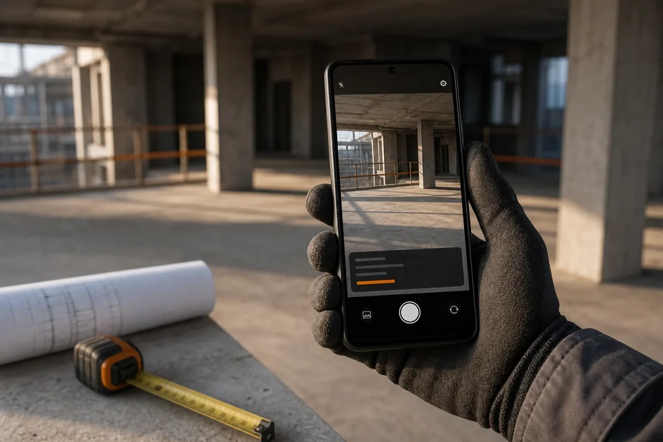
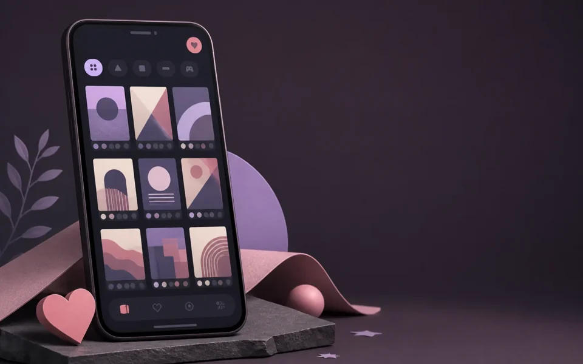
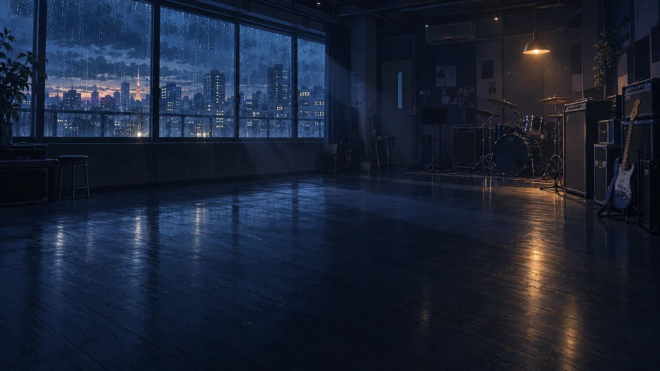

实用工具~ 自己需要，也希望对你有用。
APP / TOOL / A LITTLE FUNSELECTED APPS
给日常，多一点顺手。
不同的场景，同样认真打磨的小工具。

内容发现
互动体验暂时没有找到这个工具
换一个关键词，或者看看全部应用。
不急着做很多，先把每一个做好。新的作品，也会陆续出现在这里。
SMALL TOOLS, THOUGHTFULLY MADE
简单一点，用心一点。
不把每件事做大，把在意的事做好。
实用优先
从实际遇到的问题出发，
让工具真正派上用场。
简洁而克制
少一些打扰，多一些专注，
把复杂留在实现里。
保持开放
分享代码、记录与想法，
也欢迎不同的声音。
持续打磨
自己使用，也听你的反馈，
让细节一点点变好。
BEYOND THE CODE 博客筹备中
代码之外，
也有喜欢的生活。
开发手记、使用心得，以及偶尔的动画与游戏。
这些记录，会在独立的博客里慢慢展开。
/blog，给兴趣多一点空间。做自己真正想用的东西。
也期待，能成为你喜欢的小工具。